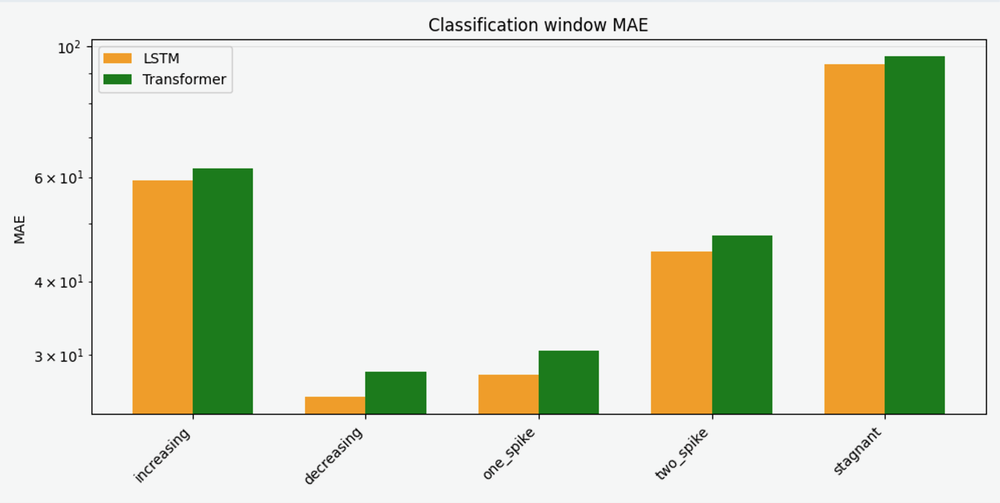
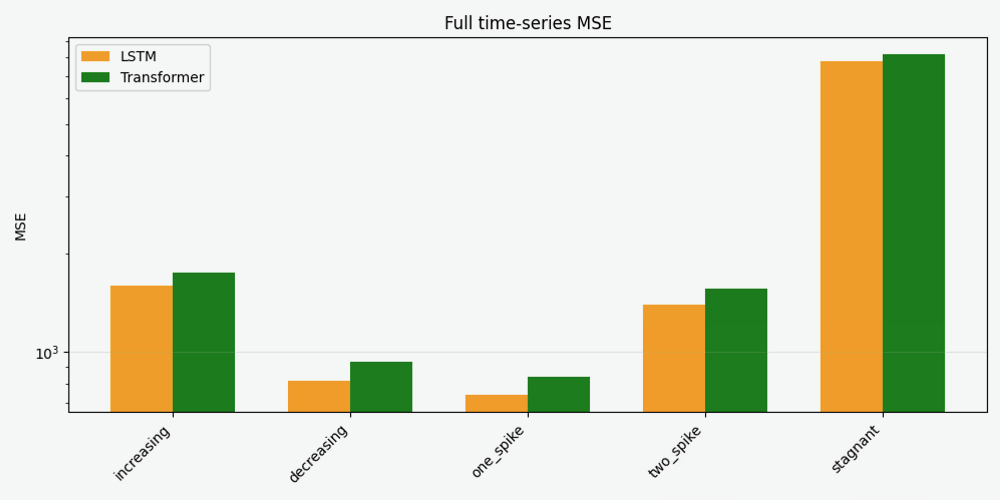
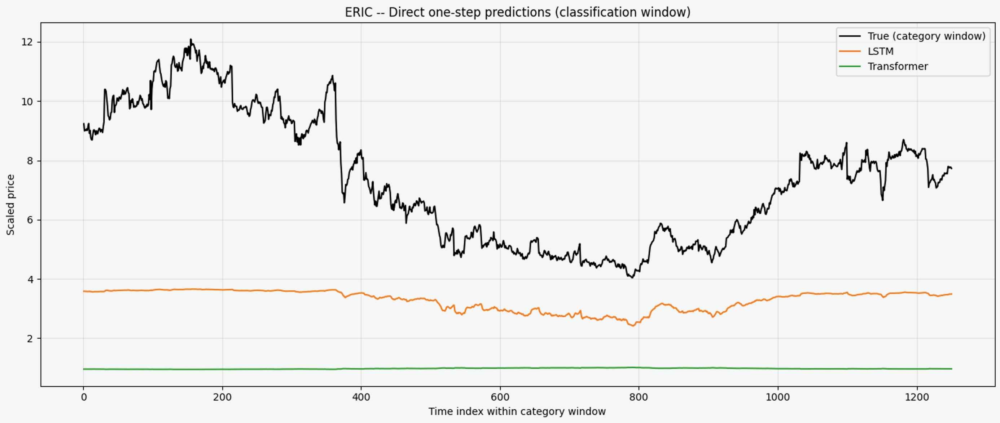
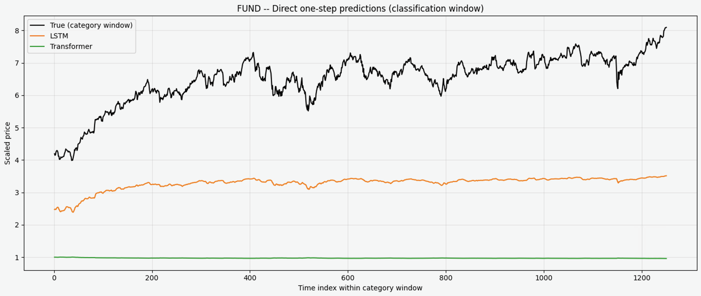
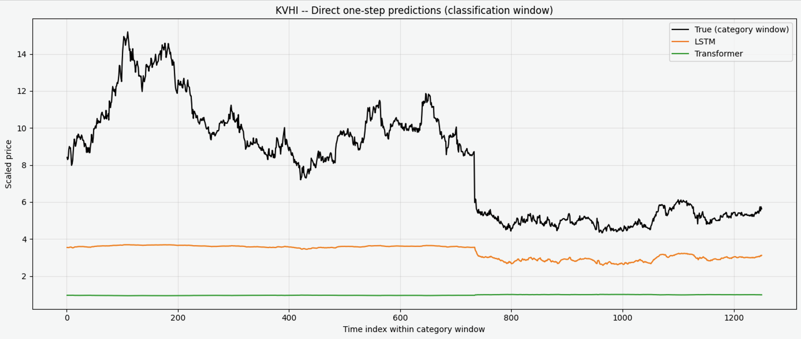

Forecasting time-series remains a prominent challenge in machine learning. Recurrent neural networks, including variants like Long Short-Term Memory (LSTM) networks, have long been standard tools for modeling sequential data. Recently, Transformer architectures have displaced recurrent models in natural language processing because self-attention can capture long-range dependencies more flexibly than explicit recurrence. This project investigates whether such advantages extend to forecasting daily stock prices, where each input sequence consists of a univariate series of daily closing prices for a single stock. This domain is characterized by high noise, regime shifts, and multi-year temporal dependencies. To study this setting, we construct a dataset spanning 20 years of daily closing prices for multiple stocks with diverse trend behaviors, build matched LSTM and Transformer time-series forecasting pipelines, and systematically evaluate both architectures in terms of predictive accuracy and computational efficiency.
This project is motivated by several related questions about sequence modeling in financial markets. First, given the success of Transformers in long-context language modeling: do transformers outperform LSTMs in financial time-series forecasting, or does the recurrent inductive bias of LSTMs remain advantageous when predicting daily closing prices? Second, stocks do not all behave alike. Some exhibit relatively steady growth, others drift downwards, some remain stagnant, and others can be dominated by one or two sharp spikes. Does model performance vary across these distinct stock behavior trends? Third, modern applications often require training on multi-year, multi-asset datasets with long input windows of daily closing prices. How well do LSTMs and Transformers handle such long horizons, in both accuracy and efficiency? Answering these questions will clarify whether modern sequence models are appropriate for realistic, noisy long-term forecasting tasks.
This study builds directly on three main lines of prior work. First, Hochreiter and Schmidhuber’s “Long Short-Term Memory” introduced the LSTM architecture, which uses gating mechanisms to mitigate vanishing gradients and has become a standard baseline for sequence modeling tasks, including time-series prediction [1]. Second, Vaswani et al.’s “Attention Is All You Need” proposed the Transformer architecture, showing that self-attention without recurrence can achieve state-of-the-art performance on language tasks while capturing long-range dependencies [2]. Third, Zhou et al.’s “Informer: Beyond Efficient Transformer for Long Sequence Time-Series Forecasting” adapted Transformer-style models to long sequence time-series forecasting, introducing architectural and attention optimizations to handle long inputs efficiently [3]. Most prior time-series research evaluates models on short horizons, single-ticker datasets, or a small number of assets. It typically has not stratified performance by qualitatively different trend shapes. In contrast, this project applies LSTM and Transformer models to long (20-year) univariate sequences of daily closing prices, groups evaluation stocks into multiple trend categories, and compares architectures across both overall and category-specific performance.
This project proceeds from several concrete objectives. First, we compile a stock dataset consisting of 20 years of daily closing prices for multiple equities and assign each stock to one of five buckets based on the shape of its recent 5-year trend: steady increase, steady decrease, stagnant, one spike, or two spikes. Second, we design and train comparable LSTM and Transformer forecasting models that take as input a fixed-length window of past daily closing prices and output a one-step-ahead prediction, using identical data loading, preprocessing, and evaluation protocols wherever possible. Third, we compare the two architectures along two axes: predictive accuracy, using mean squared error (MSE) and mean absolute error (MAE), and computational efficiency. Finally, we visualize model behavior by plotting true versus predicted daily closing prices, providing qualitative insight that complements the numerical metrics and informs future work.
As with any industry deep dive, the first step is arguably the most important: the accumulation of high-quality data. To this end, we had two objectives to fulfill in gathering data. One, we needed a lot of data points to attempt to train sufficiently large models. And two, we needed data that had specific trends to test the models' predictions of those trends. We started with the second goal. To classify the trends, we would focus on a yet-to-be-determined time period (the classification window) of stock data and mathematically calculate if the overall trend in that period was increasing, decreasing, stagnant, one spike, or two spikes. If the data in a classification window was too noisy, it would fail to be classified into any of these categories. Additionally, we developed a numerical “quality” metric that would rank the significance of the trend in that classification window. In other words, it's a similarity score between the perfect trend for that window and the stock's real-world trend in that window. Using this score, we could pick stocks that had the best quality of trends, and thus feed the model the best real-world examples of each of the categories. The “quality” metric is arbitrary, but it is not a significant feature of the project. Each trend is subject to the same metric, which weights its slope and volatility in the case of the increasing, decreasing, or stagnant categories, or just its volatility in the two spike categories.
In a perfect world, we could look at and classify 20+ years of stock data history for each stock. However, it is unreasonable to classify such a long history of stock data. For example, there are market-wide shocks around 2008 and 2020 Q1 and Q2 from the recession and COVID, so a 20-year classification period including those moments would be cluttered and imperfect. With this understanding, we contemplated simulating our own fake data, but that lacked the appeal of using real-world data for the models. While the simulated data might have been cleaner, it was unrealistic. The characteristics of real-world data are important in trying to build predictive models, and simulated data lacks the full unpredictability of real-world data. Deciding to go back to real stock data, we noticed market-wide shocks (recessions/spikes) occurring periodically, so we needed to pick a classification window that would fit between these shocks. Conveniently, although there has been significant uncertainty and global economic change since September, 2020, the overall stock market shocks are minimal in the last 5 years. That gave us a great time period for this classification window. We could use data from September 1st, 2020 through September 1st, 2025, to see 5 years of data to classify. This would fulfill the second goal.
With this decision, there were two options for the second goal. From past experience and other learned examples, we knew we would need around 250k individual time points to attempt to train a sufficiently good model. Therefore, the two options were to either gather the 5-year data for 200 stocks, or gather a much longer time-series for fewer stocks. We picked the second option because there is additional evaluation benefit in training these models with longer time-series. The long time-series have a lot of interdependencies, which offer more information to the models in training, but they also challenge the models by stressing their memory capabilities. Given all of that, we chose to save 20 years of stock closing data for 65 different stocks. This would mean gathering the data from September 1st, 2005 through September 1st, 2025 for each stock. This seemed like the best trade off of gathering enough classification-specific data and also gathering enough high-quality time-series data.
The actual gathering process was very simple after those logistics. We used yfinance [4] to import the stock data from every single stock on the NASDAQ stock exchange. After ensuring that each stock had enough data collected in the 20-year window, we attempted to classify the trends and then score the similarities. This left us with a ranking of the best stocks for each classification window, with their data for the classification window and 15 years before that. We downloaded the top 13 stocks in each category - 10 from each category would be used for training and 3 would be used for evaluation. The final result of the data gathering was 50 training stocks that were top-ranking in quality for each category, each with 5,030 time points, yielding the 250k time points and highest-quality trend data we set out to find. We also had 15 stocks set aside for evaluation metrics. At training time, we randomly selected 10 of the top 13 from each category to be training data, but by setting seed we could ensure that the same 10 were selected each time. This gave identical training data to each model, but allowed random selection of stocks for training and evaluation.
After gathering all of the necessary data, the next step was to build the LSTM and Transformer models. The focus of the project is not to optimize each hyperparameter of the models to squeeze the best performance out of each of them. Rather, it is to compare baseline, general LSTM and Transformer models. That was the entire goal throughout the implementation of the models: set the hyperparameters and other training parameters to be common baselines. We aimed for a fair comparison by using industry-standard hyperparameters for both models. However, we acknowledge that model-specific adjustments (e.g., layer normalization for the Transformer) reflect differences in the architectures' numerical stability requirements, not intentional bias.
To that end, the setup of the LSTM model was very rudimentary. The hyperparameters were set to: input_size = 1, hidden_size = 64, num_layers = 2, dropout = 0.2, output_size = 1. Input and output are simply preferences for data handling, but hidden_size and num_layers were set to baseline numbers, and likewise for dropout. Relatedly, the Transformer model was rudimentary, too, but there were a few additional features to the Transformer model. First, the Transformer requires a positional encoding. The LSTM handles the ordering of time points through its neural network architecture, but the Transformer evaluates input in bulk and needs the positional encoding. Second, the Transformer required layer normalization. The first iteration of the model did not include normalization, but the gradient exploded upon training, which deemed layer normalization necessary. Third, the Transformer needed a causal mask so that it could not peak at future stock data. This is standard (and logical) for time-series data. Lastly, Vaswani et al. included some general hyperparameter guidelines in their groundbreaking Transformer paper, which provided additional baselines for hyperparameter settings. Thus, the hyperparameters for the Transformer model were set to: input_size = 1, d_model = 64, n_heads = 4, n_layers = 3, dim_feedforward = 256, dropout = 0.1, and output_dim = 1. Just like the LSTM, all of these settings draw their justification from industry settings, with the additional reinforcement from Vaswani et al.'s paper.
The final step in predictive modeling is the training of the models. In the training architecture, there are a couple more implementation decisions that need justification. The learning rate was set to 1e-4. The initial test was 1e-3, but that was too extreme and led to exploding gradients, so we fell back to 1e-4. That is still a very common, industry standard learning rate that does not explicitly favor one model over the other. We decided to train for 50 epochs, hoping to give enough time to fine tune the models without being extreme. The final implementation consideration was a gradient norm clipping step. While our initial testing did not use this feature, exploding gradients left no choice but to add it. The gradient clipping was set with a max norm of 0.1. This was applied to both models, and was necessary for both models, too. While gradient clipping can inhibit learning, it was necessary to stabilize training.
With all of these decisions made - data parsed and collected, models initialized to industry standards and baselines, and training framework set as fairly as possible - it was time to train and evaluate the models.
After training, the models are insignificant without simple, transparent ways to evaluate their true effectiveness. We choose two simple evaluation metrics: MSE and MAE. While these two metrics are not complex, they are simple to implement, quick to calculate, and easy to understand. They are similar metrics, measuring the difference between the prediction and the target, with MSE adding compounding consequences to worse predictions.
To calculate these numbers, our last implementation decision was the input window to the model. Given that we used 5-year (1,250-point) windows in the trend classification, that seemed appropriate as the length of the model inputs for predicting the next time points. Our model architecture set up this phase so that an input of 1,250 time points to each model would output one predicted value, simulating the next-day closing price of the stock. Therefore, for each evaluation stock, we fed the models 1,250-point sequences starting with days 1-1,250, and ending with days 3,779-5,029, yielding approximately 3,780 individual one-step predictions per stock. Each iteration would yield one prediction, which we could compare to the known closing price and calculate the two metrics. After sliding through the complete stock time-series, we returned the averaged metric for the stock.
In another pass, to focus specifically on the prediction accuracy on the classification window of the model, we implemented the same system but only to predict the final 1,250 days, the initial 5-year classification window for each stock. This gave us specific metrics for just the classification, and allowed us to compare the models' prediction accuracy within each trend category. Given these numbers, we were confident that we could draw some conclusions to compare the performance of each model.
Following all of the above framework, we trained the LSTM and Transformer models and evaluated their outputs. Using an NVIDIA GeForce RTX 4070 GPU with batch size 128, both models' losses converged within the 50 epochs. In both cases, by epoch 30, the loss was within one-thousandth of the final loss after the 50th epoch. Also, with the 250k datapoints and 50 epochs of training, the LSTM completed its training in 16 minutes, while the Transformer took 264 minutes. That 16-fold increase is very significant in light of the purpose of these models. They can be used as quick, rough predictions of stock closing prices, and the time difference matters in potential real world applications of these models.
 
We broke down the evaluation metrics calculations into 20-year one-step prediction accuracy and classification window 5-year one-step prediction accuracy. For both of those periods, we calculate MSE and MAE, and for each model. This yields 8 numbers for each evaluation stock, and the complete chart is included in the appendix.
Highlighting two metrics, compare the MSE calculations for the full time series for each model, and the MAE calculations for the classification windows for each model. As seen in figures 1 and 2, the LSTM model just slightly outperforms the Transformer across all of the metrics. In fact, the MSE is about 10% higher for the Transformer than the LSTM. In the MAE calculation, the same trend is visible. The LSTM outperforms the Transformer by just a little bit in every single classification. More generally, both models do a better job of predicting the decreasing and one spike models, and they both really struggle with increasing and stagnant stocks. Decreasing trends and isolated spikes may be easier to predict because they exhibit stronger directional bias compared to stagnant or steadily increasing stocks, which require finer discrimination of noisy daily fluctuations. This is supported across the board in the figures and the appendix chart.



Our finding that LSTM outperforms Transformer on daily stock forecasting contrasts with prior work in longer-horizon forecasting [3]. This may reflect three factors: (1) daily stock prices exhibit high noise and weak autocorrelation beyond 1–2 days, limiting Transformer’s long-range dependency advantage; (2) LSTM’s recurrent structure provides implicit regularization against overfitting to noise; (3) the 1,250-day input window may be suboptimal for Transformers, which excel at variable-length contexts. Future work should test longer horizons where trend structure emerges.
Limitations of our study cover a few key areas. Stock prices are highly stochastic, and history-only models do not typically have access to fundamental, macroeconomic, or sentiment-based market drivers. This results in an inherent maximum achievable accuracy. Further, this study focuses on single-step prediction as opposed to multi-step or probabilistic prediction. Different architectures might prove superior under multi-horizon tasks. Additionally, while using 5 years of historical data is justified by the trend bucket classification we used, this imposes high computational cost on the Transformer and precludes experiments that use larger datasets. On a related note, the Transformer’s slower training time limited exploration of larger variants or longer sequences. In addition, we didn’t include technical indicators, volume data, or external features such as news, volatility indices, or relationships between sectors. Multivariate inputs may shift comparative performance. When interpreting our comparative outcomes or generalizing these findings to broader financial prediction settings, these limitations should be taken into account and addressed in future work.
Our study used mostly standard default configurations, with limited tuning to prioritize comparing baseline models and also due to computational constraints, particularly for the Transformer. A more attentive approach to tuning hyperparameters could impact the outcome. This could include experimenting with different numbers of epochs to determine whether longer training enables either architecture to extract more useful patterns or just results in overfitting. Adjusting the learning rate would also yield valuable insights, since smaller or scheduled rates might speed up convergence if tuned correctly. Additionally, varying the depth and width of the models, such as the number of LSTM layers or Transformer encoder blocks and the size of their hidden layers might shed light on whether increased capacity leads to better predictive accuracy or just amplifies noise. Finally, testing multiple input sequence lengths could clarify how much historical context is useful for forecasting. Shorter windows might reduce noise and training time, while longer windows might allow the models to capture broader market structure.
These results have several implications for both financial forecasting and the overall study of sequential models. The LSTM possesses inductive biases such as temporal smoothing, recurrence, and simple parameterization that may be advantageous in settings with high levels of noise, such as equity markets. Pursuant to our observations, when historical patterns are weak, the Transformer’s ability to model global dependencies might not result in great enough improvements to justify a training time upwards of five times slower and higher memory requirements. Large-scale datasets quickly become unreasonable for use for testing Transformers especially with iterative research that would benefit from quick experimentation. LSTMs offer a more realistic compute overhead. Given marginal performance differences, lighter-weight attention modules or hybrids between the two models we analyzed might offer competitive accuracy with less burdensome computational costs. In addition to optimizing compute, it can be considered that the limiting factor might be the absence of richer features such as volatility indicators, sector correlations, macro trends, or news and sentiment information. Overall, our results suggest that for standard stock price forecasting, LSTMs are a useful and efficient baseline, whereas Transformers might not inherently outperform them in this domain.
[1] S. Hochreiter and J. Schmidhuber, “Long short-term memory,” Neural Computation, vol. 9, no. 8, pp. 1735-1780, 1997.
[2] A. Vaswani, N. Shazeer, N. Parmar, J. Uszkoreit, L. Jones, A. N. Gomez, Ł. Kaiser, and I. Polosukhin, “Attention is all you need,” in Advances in Neural Information Processing Systems, 2017, pp. 5998-6008.
[3] H. Zhou, S. Zhang, J. Peng, S. Zhang, J. Li, H. Xiong, and W. Zhang, “Informer: Beyond efficient Transformer for long sequence time-series forecasting,” arXiv preprint arXiv:2012.07436, 2021.
[4] Yahoo Finance, “Yahoo Finance: Stock market quotes, news, and data,” Yahoo, Accessed: Feb. 2025. [Online]. Available: https://finance.yahoo.com/
| ticker | COKE | CLMB | CRVL | JOUT | IEP | KVHI | EBMT | MSEX | ERIC | EVRG | DGICA | JBSS | KMB | FUND | BBH |
|---|---|---|---|---|---|---|---|---|---|---|---|---|---|---|---|
| category | increasing | increasing | increasing | decreasing | decreasing | decreasing | one_spike | one_spike | one_spike | two_spikes | two_spikes | two_spikes | stagnant | stagnant | stagnant |
| lstm_full_mse | 1893.89976 | 1194.96562 | 1687.3442 | 2202.59149 | 199.4177 | 50.9043666 | 94.1465704 | 2096.89182 | 17.2605254 | 1422.84083 | 58.047941 | 2712.81399 | 8298.25837 | 4.73329278 | 15013.5213 |
| lstm_full_mae | 27.9429282 | 21.0686749 | 28.4733398 | 38.6137883 | 12.6180505 | 6.66892036 | 8.7909307 | 38.0321503 | 3.8959784 | 34.4698417 | 7.26368847 | 43.1161112 | 86.5558809 | 1.92400657 | 113.550415 |
| lstm_cat_mse | 5423.98148 | 3480.73795 | 4797.89058 | 4000.43919 | 269.910433 | 29.7578318 | 158.007401 | 4739.0827 | 19.7655063 | 2571.01036 | 96.9969728 | 5777.37455 | 13433.9378 | 10.7107388 | 26174.3463 |
| lstm_cat_mae | 64.7832424 | 48.5196507 | 64.4694169 | 56.8436283 | 14.6922021 | 4.81407147 | 12.234968 | 67.1644482 | 4.04046888 | 50.2778341 | 9.65885824 | 74.8667959 | 115.579506 | 3.22474519 | 161.012607 |
| trans_full_mse | 2059.3963 | 1321.21271 | 1856.69369 | 2430.7691 | 276.460131 | 92.9224032 | 148.912768 | 2321.93392 | 41.9694801 | 1627.31057 | 104.098875 | 2966.94516 | 8805.24296 | 14.4323181 | 15676.702 |
| trans_full_mae | 30.5673303 | 23.7799171 | 31.2205279 | 41.435124 | 15.3199123 | 9.23534561 | 11.4485846 | 40.8529804 | 6.24863209 | 37.3034145 | 9.92364182 | 45.8506874 | 89.4333198 | 3.42105744 | 116.428675 |
| trans_cat_mse | 5804.44738 | 3766.7466 | 5176.60883 | 4334.03175 | 359.158836 | 59.7407874 | 233.162808 | 5133.16424 | 45.0724176 | 2867.33345 | 157.239249 | 6216.40458 | 14109.2938 | 31.2704814 | 27112.2742 |
| trans_cat_mae | 67.6459542 | 51.3654377 | 67.3375369 | 59.6945274 | 17.4254165 | 7.16135689 | 14.9886181 | 70.0348711 | 6.35143669 | 53.1423455 | 12.3873991 | 77.7427618 | 118.465002 | 5.53974094 | 163.899207 |